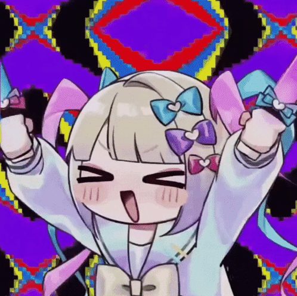
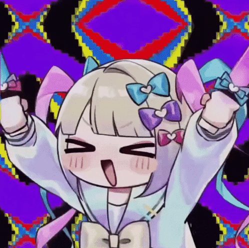

MERRY CRYSLER OMI!!!!! (although a bit late)
MERRY CRYSLER OMI!!!!! (although a bit late)It's been a good while honestly, I still remember back in 2023 when I joined sigcord and I met you (after I got yanked out of the vents like the good lurker I used to be) and truth be told you always gave me good vibes, imagine my excitement when we became...
quite literally us
I might or might not have spent some time thinking whether to do this lili-coded or jill-coded, ultimately I thought Jill best fits you hehe. Anyways, I really appreciate your friendship! even though we don't talk a whoole lot like before, it's always nice to do our catch ups and our lil smoke time. Not to mention all the good memories on ryan gosling which I always treasure in one way or another. With that in mind I said "Hm. I'm not really an artsy person but I know a thing or two about making websites." and here we are, having this glorified web postal which could've been a long text... But I'm extra like that! Besides, this will arrive at your doorstep with two littler gifts. I hope you find this at least sort of amusing, i'm afraid I couldn't add a lot of things I wanted to add due to time but i'm sure i'll get to that for next year's christmas :clueless:
Truly, your oomfship is the gift that has kept on giving ever since we met, and I'm forever grateful for that. I hope that it keeps on giving with your warming presence, your (sometimes concerning) tea and your "mrrp :3c"'s. Oh yeah, tell me when you reached the end of this postal so I can SHAZAM! something else your way.